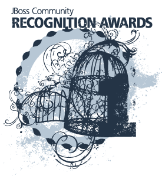

Vote for JBoss Community Recognition Awards !
Each year, we ask the JBoss project leads to nominate contributors that they feel have make significant and leading contributions to the JBoss.org Community over the past year. It’s that time again, and those nominations are now complete – so let the voting begin!We have added a new category this year, “Community Leadership,” so the categories are now:
- Community Leadership
- New features
- Bug fixes
- Issue/JIRA
- Wiki
- Documentation
Several key jBPM community contributors were nominated this year, so your help on giving them the recognition they deserve would really be appreciated !
So please go and vote now !
- Bug Fixes:
- Esteban Aliverti – Esteban has shown tireless commitment to improving the overall quality of the project. From testing edge scenarios to fixing high profile bugs, no part of the code is out of his reach: fixing bugs from the core engine to the web tooling, Esteban has left his mark and helped improve the code for the benefit of the whole community.
- Community Leadership
- Demian Calcaprina – Demian is a very active jBPM Community Member, as he’s helping on the forums, reporting issues, etc. He is also very active testing new releases and reporting back with suggestions and improvements.
He was accepted for Google Summer of Code 2012, where he worked on extending the jBPM human task service with a pluggable life cycle (which a task goes through, from creation through claiming and starting all the way through completing, etc.) using a business process, executed by jBPM core engine.
Demian is currently working as a Software Engineer at Viridian, but he is also offering freelance consulting services on Drools and jBPM.
- New Features
- Mariano de Maio – Mariano is a very active community member who is always helping both in the community channels and on his own blog: http://marianbuenosayres.wordpress.com
He is a Drools & jBPM Consultant who has contributed with the Infinispan and Drools integration and with the jBPM Form Builder. He has also reported and helped fix several bugs in the Drools and jBPM source code, providing comprehensive test suites. Mariano is now helping with the development of several components of the new jBPM Console NG.
- Saiful Omar – Saiful has been promoting and using jBPM in his academic research, which focuses on Process Adaptation and Compliance. He has published various papers where he describes an adaptive compliance workflow management system built on top of jBPM.
Saiful has been contributing to the jBPM Designer (i.e. a web-based process designer) with important features like:
(1) Locking and Unlocking feature – this feature allows users of jBPM Designer to lock certain parts of the business process model in order to foster collaboration during the modelling phase of BPM. Locked parts of the model could be seen as “”feature complete”” and unlocked onces are what needs to be finished. Locked nodes can easily be unlocked as well if needed.
(2) Microsoft Academic Search Service Node – the first community contributed jBPM service node definition and implementation. It allows users to easily add the Microsoft Search feature into their business processes. This contribution has been added to the jBPM community service node repository.